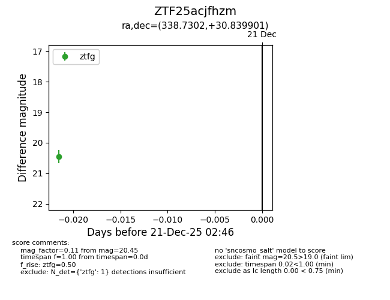
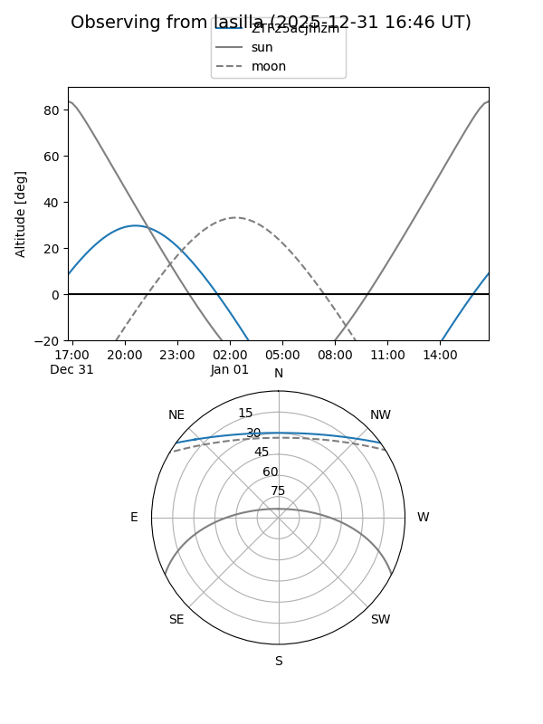
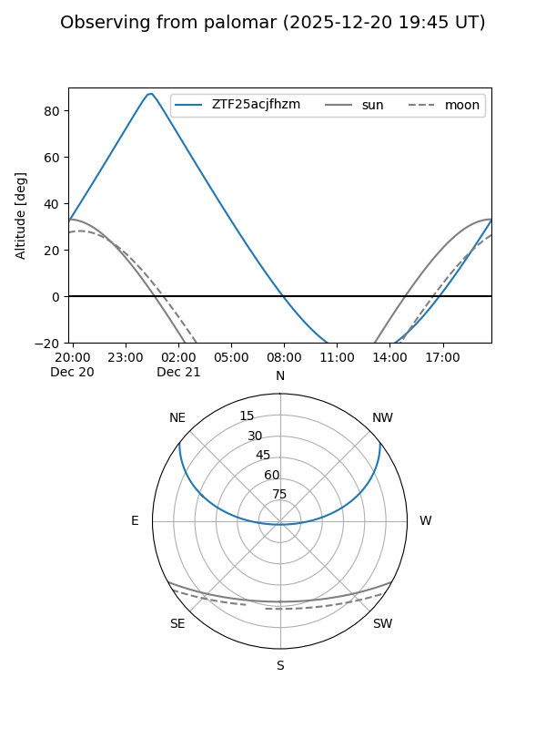

ZTF25acjfhzm
Target ZTF25acjfhzm at 2025-12-31 17:00
Aliases and brokers:
FINK:
Lasair:
ALeRCE:
alt names
ZTF25acjfhzm (ztf,fink_ztf)
Coordinates:
equatorial (ra, dec) = 338.7302,+30.83990
equatorial (HMS+DMS) = 22:34:55.25,+30:50:23.64
galactic (l, b) = (91.2431,-23.50222)
Flags:
Photometry:
last ztfg=20.45
1 ztfg detections
Lightcurve

Visibility


Additional plots